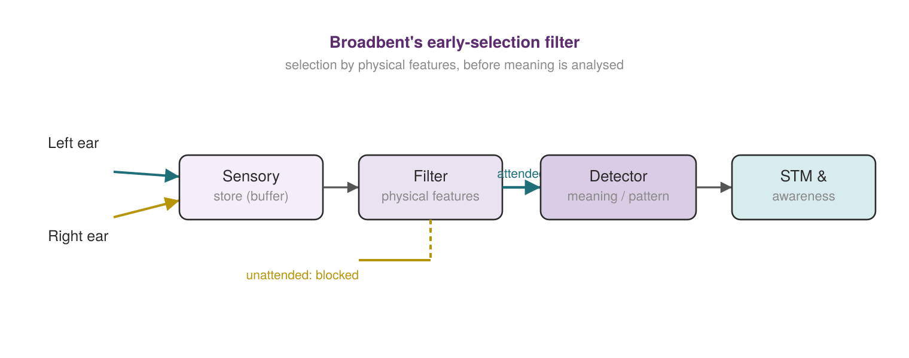
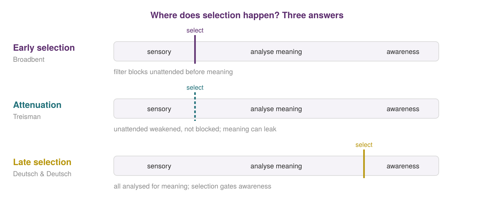
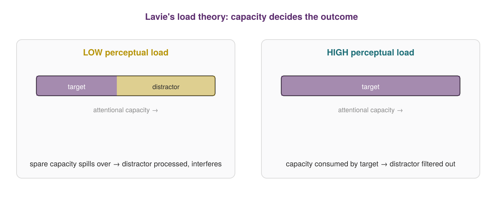
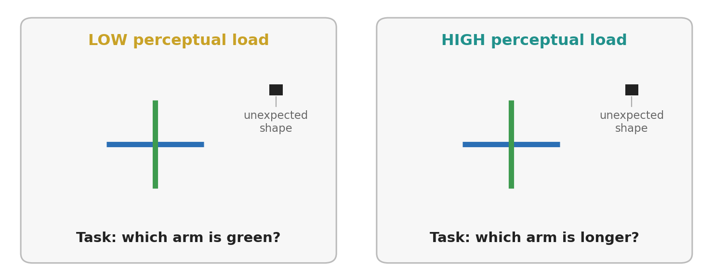
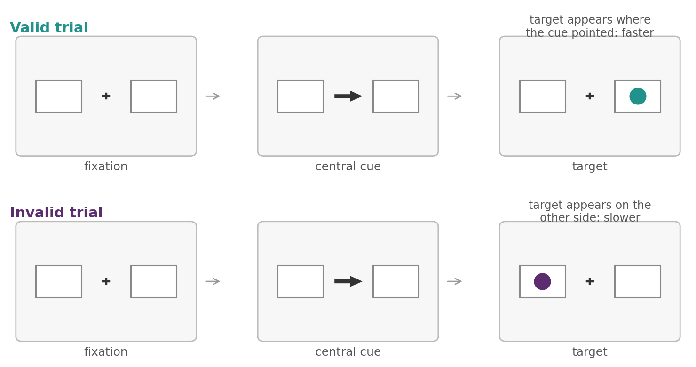
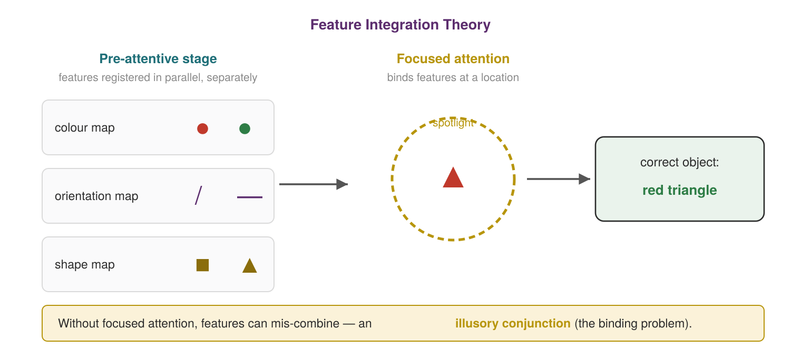
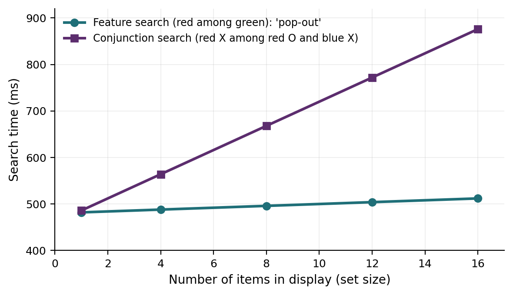

Chapter 2
Attention
Where this chapter sits
Chapter 1 left us with the information-processing view: the mind takes in information and transforms it through a series of stages. It also introduced a limit that we glossed over at the time, namely that short-term memory holds only a few items. That limit is not a quirk of memory; it is a property of the whole system. We are bombarded with far more information than we can use, so something has to decide what gets through. That something is attention, and it is this chapter's subject.
Notice the continuity of the metaphor. In Chapter 1 the modal model had information flowing through stages, and the very first stage after the senses is a gate. Broadbent, whom you will meet shortly, drew that gate as a filter, and his 1958 filter diagram is in fact the ancestor of the flow diagrams from the last chapter, not a descendant of them (the modal model came a decade later). So attention is not a new topic bolted on; it is the selection stage of the architecture we already have. It is also where the Rider and the Elephant earn their keep: the conscious, deliberate rider is what we usually call "paying attention", while the elephant is the vast automatic processing that runs below awareness and, as we will see, is doing far more than the rider ever knows.
Learning objectives
2.1 What attention is
We use the word "attention" constantly and yet it resists a tidy definition. William James (1890) put it best: everyone knows what attention is. It is the mind taking possession, in clear and vivid form, of one out of several possible objects or trains of thought, which necessarily means withdrawing from some things in order to deal effectively with others (Graham & Griffin, 2025; Klein, 2023). That description already contains the two facts that organise the whole field: attention is selective, and it is limited.
Because we study attention through the tasks we use, the field has accumulated several senses of the word. Sustained attention (vigilance) is the ability to stay alert for a rare signal over time, as required of the wartime radar operator or the airport screener. Divided attention is the attempt to handle more than one source at once. Spatial attention is how we focus on, and shift between, locations in the environment. Running through all of these is selective attention: taking in some information while deliberately blocking out the rest (Graham & Griffin, 2025). The guiding questions for the first half of this chapter are simple to state: how much can we attend to at once, how do we select, and what happens to what we ignore?
It is worth holding two senses of the word at once. Attention is a process, the act of selecting one thing over others, and it is also a resource: a limited pool of capacity that tasks draw on and can use up. Most of the models in this chapter are about attention-as-process (where does the selection happen?); load theory, later, is about attention-as-resource (how much capacity is left over?). Keeping both senses in view will make the whole chapter hang together.
2.2 Selective attention: where is the filter?
The natural laboratory for selective attention is the cocktail party. In a room full of overlapping conversations you can lock onto one voice and follow it, yet the moment you are engaged you cannot also track the others, and you are oblivious to your tight shoes and the smell of the flowers. Then someone behind you says your name and you notice instantly (Graham & Griffin, 2025). Both halves of that experience matter: we select impressively well, and we are sharply limited.
Cherry (1953) and Moray (1959) brought the cocktail party into the lab with dichotic listening and shadowing: two messages, one to each ear, with the participant repeating one aloud. People shadow the attended message easily and report its content, but of the ignored ear they can report only crude physical facts, such as a man's voice or a woman's, or a change in pitch. They miss a switch of language from English to German, and they miss the same word repeated 35 times (Graham & Griffin, 2025; Klein, 2023). So our capacity to process meaning is tightly limited, which makes the selection process the whole game. The question is where in the stream selection happens.
Broadbent's early-selection filter
Donald Broadbent (1958) proposed the first explicit answer. Using dichotic tasks with pairs of digits split across the ears, he found that people prefer to recall everything from one ear and then the other, and struggle to interleave. He concluded that a filter early in the system selects one channel on the basis of physical features (which ear, which voice, which pitch) and blocks the rest before meaning is analysed at all (Graham & Griffin, 2025; Klein, 2023). It is an all-or-nothing gate, placed early (Figure 2.1).

The model is elegant, and it is wrong in an instructive way. If the filter blocks the unattended channel before meaning, how can you hear your own name in the ignored ear? And why, when "Dear 7 Jane" arrives in one ear and "9 Aunt 6" in the other, do people report "Dear Aunt Jane", following meaning across the very channels the filter should keep apart (Gray & Wedderburn, 1960)? The meaning of unattended material is clearly getting through sometimes. Broadbent needed revising.
Treisman's attenuation model
Anne Treisman (1960) ran dichotic experiments in which the two stories swapped ears mid-way; people spontaneously followed the meaning across to the wrong ear before catching themselves (Graham & Griffin, 2025; Klein, 2023). Her fix keeps selection early but softens it. Incoming messages pass through an attenuator that analyses them first by physical features and then, more weakly, by language and meaning; the attended message passes at full strength, while the unattended one is not blocked but turned down. It is attenuated, not off. What survives then reaches a dictionary unit, a store of words each with its own threshold for recognition. Common or personally important words have low thresholds; your own name has a permanently low one, so it breaks through even when attenuated, which is why you hear it across a noisy room. Selection is early, but leaky.
Late-selection and multimode models
Deutsch and Deutsch (1963) pushed selection to the other end. On their late-selection model, everything is analysed for meaning, and selection happens only at the point of entering awareness or driving a response (Graham & Griffin, 2025; Klein, 2023). This fits evidence that unattended material is processed semantically, and it sits comfortably with subliminal-perception findings.
The classic demonstration is MacKay (1973). Participants shadowed an ambiguous sentence in the attended ear, for instance a sentence about people throwing stones at "the bank", which could mean a riverbank or a financial one. At the same time, a single biasing word played in the unattended ear: "river" for some listeners, "money" for others. People could not report the unattended word, yet their later interpretation of the ambiguous sentence was pulled towards whichever word they had been given. The unattended word must therefore have been processed all the way to its meaning, which is precisely what late selection predicts and what an early filter forbids (MacKay, 1973).
The trouble is that neither pure early nor pure late selection accounts for all the data. The multimode model (Johnston & Heinz, 1978) resolves this by making the locus of selection flexible: we can select early on physical features when that is easy and sufficient, or late on meaning when the task demands it, at a cost in effort (Graham & Griffin, 2025). The flexibility is the point, and it is one of the real strengths of the system. Figure 2.2 lines up the three fixed-locus models; notice that they disagree only about where the selection point sits, not about whether there is one.

2.3 Load theory: reframing the whole debate
Decades of arguing about whether selection is early or late produced a stalemate, because the answer turned out to be "it depends". Nilli Lavie's load theory says what it depends on: the perceptual load of the task you are doing (Lavie, 1995, 2005; Lavie et al., 2014). Perceptual processing has a limited capacity, and it is spent involuntarily. Whatever capacity is available will be used on whatever is in front of you, whether or not you intend it. When the relevant task carries high perceptual load, with many items or a demanding discrimination, capacity is fully consumed by the target, nothing is left over, and irrelevant distractors are simply not processed. Selection looks early. When the task carries low perceptual load, the spare capacity spills over onto the distractors whether you like it or not, and they intrude. Selection looks late. Figure 2.3 contrasts the two cases: follow where the leftover capacity goes in each.

This is a genuinely satisfying resolution. Early and late selection are not rival theories but two ends of a continuum, and load sets the position along it. It also makes a counter-intuitive prediction that holds up: adding more to a relevant task can make you better at ignoring irrelevant things, precisely because it leaves no capacity for them.
How load is manipulated, and what that rules out
Three manipulations dominate the literature. You can increase the number of items to be searched, increase the similarity between the target and the non-targets, or hold the display completely constant and change the operation the task demands of it. The third is the cleanest, and the classic example is the cross task (Cartwright-Finch & Lavie, 2007). Participants see a briefly presented cross with one green arm and one blue arm, one arm slightly longer than the other. Under low load they report which arm is green, a simple colour judgement. Under high load they report which arm is longer, a fine discrimination on the very same display. Nothing about the stimulation differs between the conditions; only the judgement does (Figure 2.4).

Two control results matter here, because the obvious objection to load theory is that "high load" is just a fancy name for "hard". First, difficulty on its own is not sufficient. Lavie and de Fockert (2003) degraded the display so severely that the target was barely visible. Performance fell, as you would expect of a hard task, but distractor interference did not: sensory difficulty that cannot be offset by spending more capacity does not produce load effects. Second, high load reduces distractor perception rather than improving distractor rejection. Negative priming, in which a previously ignored item is responded to more slowly when it later becomes the target, is a marker of a distractor having been perceived and then actively inhibited. Lavie and Fox (2000) found negative priming under low load and none under high load. If high load worked by inhibiting distractors better, priming should have been stronger under high load, not absent.
From reaction times to awareness
Early load studies measured distractor interference in reaction time, which is an indirect index of perception. An interference effect can arise from processing that never reaches awareness, and its disappearance under load might reflect a late decision to deprioritise the distractor rather than a failure to see it (Lavie et al., 2014). The stronger tests therefore measure awareness directly, and they line up.
Cartwright-Finch and Lavie (2007) added an unexpected shape to the final trial of the cross task and asked immediately afterwards whether anything else had appeared. High load substantially increased inattentional blindness. Simons and Jensen (2009) found the same in a dynamic display: with participants tracking moving letters, about 71% noticed an unexpected cross moving across the screen in the slower, easier tracking condition, and only about 32% in the faster, harder one. Macdonald and Lavie (2008) then closed the obvious loopholes. Their peripheral shape was shown in advance and detecting it was an explicit second task, so nobody could be accused of missing a surprise. In one experiment participants reported it before responding to the search task, which rules out forgetting; in another it appeared on half the trials and a present/absent response was required every time, which rules out simply neglecting the detection task. Detection sensitivity (d′) still fell under high load, and it fell with no shift in response criterion, which is what you would expect if perception itself, rather than willingness to report, had been reduced. Across all trials of their first experiment, the shape was detected 90% of the time under low load and 37% under high load (d′ = 3.68 vs 1.31). Figure 2.5 plots both kinds of result; before comparing the panels, check the caption, because they use different measures.
![Awareness under load. Raising the perceptual load of the task in hand more than halves the chance that a critical stimulus is reported, whether that stimulus is expected and actively monitored (left) or unexpected (right). Note the two measures are not identical: the left panel is the percentage of trials on which the shape was detected, the right the percentage of observers who noticed the event. Original figure drawn from values reported in Macdonald and Lavie (2008), Lavie, Beck and Konstantinou (2014, CC BY) and Murphy, Groeger and Greene (2016) · CC BY-NC-SA 4.0.](media/ch02_image5.png)
The effect is not confined to vision. Macdonald and Lavie (2011) showed that a demanding visual task makes people less likely to report a brief tone, an inattentional deafness which argues that at least some capacity is shared across the senses. Nor is it confined to conscious processing. Load reduces the response to ignored stimuli throughout the visual pathway, as early as the lateral geniculate nucleus and V1 and within the first 100 ms of processing. More strikingly, when line drawings of tools are rendered invisible by continuous flash suppression, so that observers never see them under either condition, their V1 response still shrinks under high load (Bahrami et al., 2007). Attention on this account is not a gate on consciousness. It is a limit on processing, much of which we were never going to be conscious of.
One further result gives the theory a mechanism you can picture. Lavie, Beck and Konstantinou (2014) measured the contrast response function for a Gabor patch whose orientation participants judged while encoding into short-term memory either the colour of one square (low load) or the colours and locations of six (high load), and found that high load shifted the whole psychometric function rightwards, raising the contrast needed for half-maximum performance, without flattening its slope or lowering its asymptote. High perceptual load is therefore equivalent to reducing the effective contrast of a stimulus that receives less attention. Their phrase for it is worth keeping: load dims the light.
Two kinds of load, pulling in opposite directions
Load theory is often summarised as "a harder task protects you from distraction", and that summary is wrong, because it does not say which resource is being taxed. Perceptual load consumes perceptual capacity and shuts distractors out. Cognitive load, meaning demands on the executive processes that maintain what counts as relevant in the first place, does the opposite. In the standard sandwich task, participants hold a set of digits in memory, perform a response-competition search task, and are then probed on the digits. Holding six digits rather than one (Lavie et al., 2004), or a digit sequence whose order changes on every trial rather than a fixed one (de Fockert et al., 2001), increases distractor interference. Nothing has happened to perceptual capacity. What has been taxed is the control process that keeps the priorities straight, and when that flags, irrelevant items win more often.
The distinction has been sharpened since. Konstantinou and Lavie (2013) separated working-memory tasks that require only maintenance from those that require cognitive control. Maintaining a set of coloured squares behaves like perceptual load and reduces detection of a peripheral shape, presumably because it occupies visual representational capacity. Loading control instead increases awareness of the shape, in line with classic cognitive-load results. The effect is not universal, though: Macdonald and Lavie (2008) found that holding six digits in mind left detection of a faint, non-competing shape unchanged, which suggests executive control matters most when the irrelevant stimulus actually competes with the target. So "working memory load" is not one thing, and part of the older, apparently contradictory literature resolves once you ask which component was loaded.
Where load theory is contested
Load theory has been influential for thirty years and it is not settled. Four issues are worth knowing: three criticisms, and one line of work that the theory has turned to its advantage (Murphy et al., 2016).
Dilution. Tsal and Benoni (2010) argued that many load manipulations confound load with dilution: adding neutral letters both raises load and dilutes the distractor's influence, because the distractor now competes with several other items rather than with the target alone. When they held the number of items constant and made the target pop out, so that load was low but dilution high, distractor interference disappeared. Their conclusion was that display-size effects have been misattributed to capacity. Lavie and Torralbo (2010) replied that spillover is involuntary, so under low load the spare capacity still goes somewhere: in dilution displays it goes to the neutral search letters near the target rather than to the peripheral distractor. In a new experiment, those nearby letters, not the peripheral distractor, produced the response-competition effects. They also reported that distractor response-competition effects could be restored under specific low-load, high-dilution conditions, particularly when spillover favoured the peripheral distractor, for instance when it was better grouped with the target. The more common position now is a hybrid: both dilution and load are real, and both fall out of competition between stimuli for neural representation rather than from a single global pool of capacity (Scalf et al., 2013; Torralbo & Beck, 2008).
Circularity. There is no measure of perceptual load that is independent of its effects. High load is load sufficient to prevent distractor processing, and what high load does is prevent distractor processing. If a study finds interference under what it calls high load, it is hard to say whether the theory failed or the manipulation was too weak, which makes clean refutation difficult (Benoni & Tsal, 2013; Roper et al., 2013). This is not fatal, but it is a good example of a problem worth spotting in any theory: a construct defined by the effect it produces cannot easily be tested against that effect.
Not all distractors are equal. Meaningful non-face objects stop interfering under high load, but famous faces keep intruding (Lavie et al., 2003), and expertise does much the same job as social significance: musicians are distracted by images of musical instruments at loads that eliminate the effect in non-musicians (Ro et al., 2009). What you are trying to ignore matters nearly as much as what you are trying to attend to.
Individual differences. Capacity is not identical in everyone, and a theory built on capacity predicts exactly that. People who report high everyday distractibility are more distracted under low load, but high load makes everybody equal (Forster & Lavie, 2007). Adults with ADHD are more distracted overall, yet load reduces their interference just as effectively (Forster et al., 2014). Autistic adults show little reduction in interference at loads that work for controls (Remington et al., 2009), and their detection sensitivity survives loads that impair it in controls (Remington et al., 2012), both of which are consistent with a larger perceptual capacity. Experienced action video-game players show the same pattern (Dye et al., 2009; Green & Bavelier, 2003). These are among the most useful results in the area, because they turn the theory into a measuring instrument: if load effects appear only at higher loads in a group, that group's capacity limit sits further out.
2.4 Orienting attention: overt and covert
Attention can be pointed around the visual field, and it need not go where the eyes go. Overt orienting is shifting attention by moving the eyes to a location; covert orienting is shifting attention without moving the eyes at all, the trick you use to watch someone in your peripheral vision while appearing to look elsewhere. The two are linked, in that a covert shift often sets up the eye movement that follows, but they are separable, which is why we treat them as distinct.
The standard tool for studying covert attention is the Posner cueing paradigm (Posner, 1980). A cue indicates where a target is likely to appear; on valid trials the cue is correct, on invalid trials it is not. People respond faster to validly cued targets and slower to invalidly cued ones, which shows attention was allocated to the cued location ahead of the eyes (Figure 2.6). The paradigm also separates two ways attention is summoned. Exogenous orienting is stimulus-driven and reflexive: a sudden peripheral event grabs attention automatically, whether or not it is useful, which is the elephant reacting. Endogenous orienting is goal-driven and voluntary: it is triggered by a central, symbolic cue such as an arrow or a digit, which you must interpret and act on deliberately. This is the rider choosing. A neat signature of the reflexive system is inhibition of return: an exogenous cue first speeds responses at its location, but from roughly 300 ms after the cue responses there become slower, as if attention is discouraged from going back to where it has already been. These two routes are the bottom-up and top-down control of attention, a distinction you will meet repeatedly in this unit.

Attention does not only select places; it also selects objects. Alongside the location-based (spatial) orienting just described, there is object-based attention: when attention is directed to part of an object, its benefit tends to spread across the whole of that object rather than to an equally distant point on a different object. This is the same-object advantage (Duncan, 1984; Egly et al., 1994). So the unit of selection can be a region of space or a perceptual object. On the exogenous side, this is also where attentional capture belongs: a salient, sudden, or distinctive stimulus can seize the spotlight automatically, whether or not it is relevant, which is the elephant grabbing the reins.
There is a neural signature to all of this. Attending to a stimulus enhances the firing of the neurons that represent it, and is accompanied by increased synchronisation in the beta and gamma bands. In other words attention changes cortical activity rather than merely gating it, a point we return to at the end of the chapter, and one that connects to work on anticipatory oscillatory states.
2.5 Binding features into objects
So far attention has been about selecting a channel. Treisman's other great contribution, Feature Integration Theory (FIT; Treisman & Gelade, 1980), is about what attention does once a location is selected. Perception, she argued, happens in two stages (Graham & Griffin, 2025). In the pre-attentive stage, the visual system registers basic features such as colour, orientation and shape automatically, in parallel, and separately, across the whole scene, before you are conscious of any object. In the focused-attention stage, attention acts on a location and binds those separate features together into the object you actually perceive (Figure 2.7).

The evidence for the two stages is beautiful. Flash a display too briefly and load the observer elsewhere, and people report illusory conjunctions: they correctly register the colour red and a triangle but combine them wrongly, reporting a red triangle that was never there, because without focused attention the free-floating features recombine at random (Graham & Griffin, 2025). Give them time to attend to each location and the illusory conjunctions vanish. This is the binding problem in miniature. The brain represents features in separate maps, so something must glue the right features to the right object, and Treisman's answer is that focused attention is the glue.
The same logic explains visual search. Searching for a target defined by a single feature, a red item among green, is fast and roughly flat: the target pops out regardless of how many distractors there are, because a single feature map does the work pre-attentively. Searching for a conjunction, a red X among red Os and blue Xs, is slow and gets slower as the display grows, because you must bind features at each location in turn with focused attention (Graham & Griffin, 2025). In Figure 2.8, the slope of each line, not its height, is what tells the two kinds of search apart.

2.6 Failures of awareness
Focused attention is powerful, and its power has a price: what falls outside it can be missed entirely, even when it is staring you in the face. The signature demonstration is inattentional blindness. Neisser showed in the 1970s that people counting ball passes in one of two superimposed, semi-transparent videos failed to notice obvious events in the other (Graham & Griffin, 2025). Simons and Chabris (1999) compared superimposed, transparent videos with opaque versions filmed in a single take: observers counting passes by the white-shirted team routinely missed a person in a gorilla suit who walked through the game in a 5-second event. In a further version she stopped, faced the camera, thumped her chest, and walked off, nine seconds on screen, and was still often missed. About half the observers never saw the gorilla.
The effect is lawful, not random. You are more likely to notice an unexpected object if it shares features with what you are attending to; you are less likely to notice it the harder your task is, and the effect is not purely visual, since loading memory alone can induce it (Graham & Griffin, 2025). Section 2.3 says what governs the rate: the higher the perceptual load of the task in hand, the more you will miss.
It also leaves the lab. In a simulation of a real police-misconduct case, joggers chasing an experimenter ran straight past a staged fight, and even in broad daylight nearly half failed to see it. People talking on a phone are markedly worse at noticing things; in one study, pedestrians on their phones failed to spot a unicycling clown on their route (Graham & Griffin, 2025). Nor does expertise protect you automatically. Drew, Võ and Wolfe (2013) inserted an image of a gorilla, 48 times the size of the average nodule, into a chest CT scan and asked 24 radiologists to search the scan for nodules. Eighty-three per cent did not report it.
A close cousin is change blindness: the failure to notice a change to a scene when it is masked by a disruption such as a flicker, a cut, or a brief occlusion. In the classic demonstration by Simons and Levin (1998), an experimenter asking a stranger for directions was swapped for a different person while two workers carrying a door passed between them; a large proportion of people carried on without noticing they were now talking to someone else. The unsettling part is our confidence. Most people are certain they would spot the gorilla or the swapped person, and that certainty is exactly the error. We are aware of what we notice and blissfully unaware of what we miss, so we conclude, wrongly, that we notice nearly everything (Graham & Griffin, 2025).
2.7 Divided attention and automaticity
Can we beat the limit by doing two things at once? Sometimes, with enough practice. Spelke, Hirst and Neisser (1976) trained two people, an hour a day for weeks, to take dictation while reading for comprehension; eventually they managed both without measurable cost, though changing the task even slightly disrupted them, so the skill was narrow and hard-won (Graham & Griffin, 2025; Klein, 2023). The general lesson is that extensive practice can make a task automatic, so that it demands little of our limited capacity. This is the controlled-to-automatic shift: novel tasks need slow, effortful, conscious control, while well-practised ones run off automatically, the elephant taking over from the rider.
Schneider and Shiffrin (1977) pinned this down. When the mapping between targets and distractors was consistent, so that a given item was always a target and never a distractor, extensive practice turned search into an automatic process that was fast, largely unaffected by the number of distractors, effortless, and hard to switch off. Under a varied mapping, where today's target is tomorrow's distractor, search stayed controlled, slow, and serial. Their participants' performance climbed with practice up to an identifiable point at which the task became automatic (Schneider & Shiffrin, 1977). Automaticity even has a downside: attending to an over-learned skill can break it, which is what "choking" under pressure is.
The applied case that matters is driving. Texting is obviously dangerous, since eyes and hands leave the task, but the deeper finding is that the danger is cognitive rather than manual. A hands-free phone conversation impairs driving as much as a hand-held one, and far more than listening to the radio, because it consumes the limited capacity that noticing hazards requires; drivers on the phone show exactly the inattentional blindness of Section 2.6, failing to register things they looked straight at (Graham & Griffin, 2025). The proportion of people who can genuinely drive unimpaired while on a phone is estimated at around two and a half per cent (Watson & Strayer, 2010). Load theory adds a further wrinkle that matters for road design as much as for drivers: in simulator studies, high perceptual load on the road itself mainly makes people slow down, whereas high load at the sides of the road degrades their detection of safety-critical events coming from the roadside (Marciano & Yeshurun, 2012, 2015). The honest practical advice is not a technique for multitasking better. It is to remove the distraction, phone off and out of reach, and, as a cyclist or pedestrian, to remember that a driver looking at you is not the same as a driver seeing you.
2.8 Consciousness and the unconscious
Attention and consciousness are entangled, but they are not the same thing, and this last section is about the second of them. The organising idea is the one we have leaned on throughout: most of the work is done below awareness by the elephant, and only some of it is handed up to the conscious rider. That is also the deeper reason selection matters at all. A system in which everything reached awareness would need no filter; ours needs one precisely because so little of what the brain does ever reaches the rider.
Two modes of deciding
We decide in two modes (Graham & Griffin, 2025). In the deliberate mode we examine each factor in turn, which is accurate when the factors are few but easily overwhelmed, because focusing on one consideration crowds out the others. In the intuitive or "gut" mode we register many factors at once and arrive at an overall feeling; this can be strikingly good when there is a great deal to weigh, though it is certainly not infallible. This is the rider and the elephant again: slow explicit reasoning versus fast holistic processing. Neither is simply better; the skill is knowing which the situation calls for.
Levels of awareness
Below full awareness, your brain is processing far more than you know. The cocktail-party name is one sign; another is that fear-relevant images flashed too briefly to identify still raise the bodily fear response in phobic observers, and that priming, the nudging of concepts into readiness, shifts behaviour without any awareness of the nudge (Graham & Griffin, 2025). But being influenced is not being helplessly controlled. The other end of the continuum is high awareness: effortful, deliberate attention, which we can turn on to catch and correct a bias we know we are prone to. The 1950s "subliminal popcorn" scare, incidentally, was fabricated, which is a useful reminder that below-awareness influence is real but modest, not mind control.
The unconscious
The idea that action is prepared before we are conscious of deciding is old. Wundt captured it with an image worth keeping: the unconscious mind is like an unseen worker who does the real labour and finally drops the ripe fruit into our lap, so that only the finished results reach consciousness (Graham & Griffin, 2025). Freud made the unconscious famous, but the point is broader and does not depend on him. Unless you think consciousness is causally cut off from the brain, conscious experiences must be prepared by processes we never see. Much everyday cognition runs unconsciously, including forming attitudes by mere exposure, activating stereotypes, and the incubation that precedes a creative "Eureka" (Graham & Griffin, 2025). The take-home is that attention and consciousness are not the same: attention can act on stimuli we never become conscious of, as the flash-suppression result in Section 2.3 shows, and we can be conscious of something we are barely attending to. We need attention for a great deal; we need conscious awareness for less than we assume.
The neural basis of awareness
Why are we aware of some things and not others? Not because they are bright, attended, or deeply analysed: a masked number can be processed enough to guide a response without ever being seen (Graham & Griffin, 2025). A leading answer is that awareness depends on a reciprocal exchange of signals across brain regions rather than on any one area firing. Magnetic stimulation of the motion area V5 makes people see a moving flash of light (a moving phosphene), but a second pulse over primary visual cortex a few tens of milliseconds later abolishes the experience, which suggests that feedback from V5 to V1 is needed for the motion to be seen (Pascual-Leone & Walsh, 2001). Blindsight, in which people with primary-visual-cortex damage can guess above chance about stimuli they deny seeing, tells the same story. Because such long-range exchange needs some way of coordinating distant regions, oscillatory synchronisation in the beta and gamma bands is closely tied to awareness. The emphasis on feedback to V1 is closest to recurrent-processing accounts; Global Workspace theory makes a related claim, that awareness reflects the global broadcasting of information across a fronto-parietal network (Graham & Griffin, 2025).
Chapter summary
Attention is the selection stage of the information-processing system, and it is selective because capacity is limited. Dichotic listening shows we extract meaning mainly from the attended channel, although some meaning from the unattended channel leaks through.
Models differ over where selection happens. Broadbent's early filter blocks the unattended channel by physical features; Treisman's attenuation weakens rather than blocks it; Deutsch and Deutsch's late selection analyses everything for meaning first; the multimode model makes the locus flexible.
Lavie's load theory reframes the debate. High perceptual load consumes capacity and excludes distractors (early-like); low load leaves spare capacity that processes them (late-like). Perceptual load and cognitive load pull in opposite directions, and even within working memory, maintenance and control do different things.
The evidence for load theory runs from distractor interference in reaction times, through direct measures of awareness (load-induced blindness, inattentional deafness), to neural responses as early as V1 and to stimuli that never reach awareness at all. Its main challenges are the dilution account, the difficulty of defining load independently of its effects, distractors with special status such as faces, and findings that some tasks can boost rather than impair each other.
Attention can be overt or covert, and orienting can be exogenous (reflexive, stimulus-driven) or endogenous (voluntary, goal-driven), as shown by the Posner cueing paradigm and inhibition of return. Selection can take a location or an object as its unit.
Feature Integration Theory holds that features are registered pre-attentively and in parallel, then bound by focused attention; without it, illusory conjunctions occur. This is the binding problem, and it explains feature (pop-out) versus conjunction (serial) search.
Inattentional and change blindness show that focused attention makes us miss the obvious, and that our confidence about noticing is misplaced. The cost is real, and phone use while driving produces the same blindness.
Practice can automate a task, freeing capacity (the controlled-to-automatic shift). Consciousness and attention are distinct; much cognition runs below awareness, and awareness itself appears to depend on reciprocal, synchronised exchange across brain regions.
Self-check questions
In a shadowing task, what can people report about the unattended message, and what can't they? What does this tell you about the limits of processing?
State the key problem with Broadbent's early filter, and explain how Treisman's attenuation model solves it.
In MacKay's experiment, participants could not report the word played to the unattended ear, yet that word shifted how they interpreted the attended sentence. Explain why this result is fatal to a strictly early filter, and what Treisman's attenuator would say about it.
Explain how load theory accounts for both early-selection-like and late-selection-like results with a single mechanism.
The cross task varies load while holding the display identical. Why does that design matter, and what alternative explanation does it rule out?
Macdonald and Lavie found that detection sensitivity (d′) for a peripheral shape fell under high perceptual load with no change in response criterion. Explain why the criterion result is essential to their interpretation.
Load reduces the V1 response to an image that observers never consciously see. What does that finding tell you about the relationship between attention and awareness?
Load theory distinguishes perceptual load from cognitive (working-memory) load, and the two make opposite predictions about distraction. State both predictions, and explain why they are not a contradiction.
Summarise the dilution account of load effects and the reply to it. What kind of result would count as evidence against load theory, and why is that harder to specify than it looks?
Memory for a scene is better, not worse, when the scene coincides with a target in an unrelated detection task. Why is that awkward for the claim that perceptual capacity is spent obligatorily and completely?
Distinguish overt from covert attention and endogenous from exogenous orienting. What is inhibition of return?
Distinguish location-based from object-based attention. What is the same-object advantage, and to which kind of orienting does attentional capture belong?
What is an illusory conjunction, and how does it support the two-stage claim of Feature Integration Theory? Predict the search slopes for feature versus conjunction search.
Why does a hands-free phone conversation impair driving as much as a hand-held one? Frame your answer in terms of capacity and inattentional blindness.
Under a consistent mapping, extensive practice turns search into an automatic process; under a varied mapping it does not. Explain why the mapping matters, and name one cost of a process having become automatic.
Give one example of attending to something you are not conscious of, and one of being conscious of something you are barely attending to. What does the pair show about the relationship between attention and awareness?
Attribution and licence
This chapter is licensed under a Creative Commons Attribution-NonCommercial-ShareAlike 4.0 International (CC BY-NC-SA 4.0) licence. It adapts and remixes the sources below; changes were made, including restructuring, rewriting into the author's voice, and the addition of original framing, figures, prompts, and enrichment.
Graham and Griffin (2025), Cognitive Psychology, Chapter 4: Attention and Consciousness (Central New Mexico Community College). CC BY-NC-SA 4.0. Base source for selective attention, the models, FIT, failures of awareness, divided attention, and the consciousness material.
Klein (2023), Essentials of Cognitive Psychology (Version 2.0), Chapter 3: Attention, itself adapted from Friedrich, Attention (Noba). CC BY-NC-SA 4.0. Corroborating supplement.
Lavie, Beck and Konstantinou (2014), Philosophical Transactions of the Royal Society B. CC BY 3.0. Adapted for Section 2.3: the statement of load theory, the awareness evidence, the load manipulations, and the contrast response findings.
Swallow and Jiang (2013), Frontiers in Psychology. CC BY 3.0. Adapted for the “Going further” treatment of the attentional boost effect.
Cited but not adapted: Murphy, Groeger and Greene (2016) is not open access. It is cited in the ordinary way as a secondary source for the history of load theory and the criticisms in Section 2.3, and no text or figure from it has been reproduced.
The BIOL3005 lecture slides (Goldstein, Cognitive Psychology, 5th ed., © Cengage) are used solely as the assessment map. No slide text or figure has been reproduced.
Full bibliographic details for every work cited in this chapter, including the sources named above, are given in the References below.
References
Bahrami, B., Lavie, N., & Rees, G. (2007). Attentional load modulates responses of human primary visual cortex to invisible stimuli. Current Biology, 17(6), 509–513. https://doi.org/10.1016/j.cub.2007.01.070
Benoni, H., & Tsal, Y. (2013). Conceptual and methodological concerns in the theory of perceptual load. Frontiers in Psychology, 4, Article 522. https://doi.org/10.3389/fpsyg.2013.00522
Broadbent, D. E. (1958). Perception and communication. Pergamon Press.
Cartwright-Finch, U., & Lavie, N. (2007). The role of perceptual load in inattentional blindness. Cognition, 102(3), 321–340. https://doi.org/10.1016/j.cognition.2006.01.002
Cherry, E. C. (1953). Some experiments on the recognition of speech, with one and with two ears. The Journal of the Acoustical Society of America, 25(5), 975–979. https://doi.org/10.1121/1.1907229
de Fockert, J. W., Rees, G., Frith, C. D., & Lavie, N. (2001). The role of working memory in visual selective attention. Science, 291(5509), 1803–1806. https://doi.org/10.1126/science.1056496
Deutsch, J. A., & Deutsch, D. (1963). Attention: Some theoretical considerations. Psychological Review, 70(1), 80–90. https://doi.org/10.1037/h0039515
Drew, T., Võ, M. L.-H., & Wolfe, J. M. (2013). The invisible gorilla strikes again: Sustained inattentional blindness in expert observers. Psychological Science, 24(9), 1848–1853. https://doi.org/10.1177/0956797613479386
Duncan, J. (1984). Selective attention and the organization of visual information. Journal of Experimental Psychology: General, 113(4), 501–517. https://doi.org/10.1037/0096-3445.113.4.501
Dye, M. W. G., Green, C. S., & Bavelier, D. (2009). The development of attention skills in action video game players. Neuropsychologia, 47(8–9), 1780–1789. https://doi.org/10.1016/j.neuropsychologia.2009.02.002
Egly, R., Driver, J., & Rafal, R. D. (1994). Shifting visual attention between objects and locations: Evidence from normal and parietal lesion subjects. Journal of Experimental Psychology: General, 123(2), 161–177. https://doi.org/10.1037/0096-3445.123.2.161
Forster, S., & Lavie, N. (2007). High perceptual load makes everybody equal: Eliminating individual differences in distractibility with load. Psychological Science, 18(5), 377–381. https://doi.org/10.1111/j.1467-9280.2007.01908.x
Forster, S., Robertson, D. J., Jennings, A., Asherson, P., & Lavie, N. (2014). Plugging the attention deficit: Perceptual load counters increased distraction in ADHD. Neuropsychology, 28(1), 91–97. https://doi.org/10.1037/neu0000020
Graham, R., & Griffin, S. (2025). Cognitive psychology. Central New Mexico Community College. https://nmoer.pressbooks.pub/cognitivepsychology/
Gray, J. A., & Wedderburn, A. A. I. (1960). Grouping strategies with simultaneous stimuli. Quarterly Journal of Experimental Psychology, 12(3), 180–184. https://doi.org/10.1080/17470216008416722
Green, C. S., & Bavelier, D. (2003). Action video game modifies visual selective attention. Nature, 423(6939), 534–537. https://doi.org/10.1038/nature01647
James, W. (1890). The principles of psychology (Vol. 1). Henry Holt and Company.
Johnston, W. A., & Heinz, S. P. (1978). Flexibility and capacity demands of attention. Journal of Experimental Psychology: General, 107(4), 420–435. https://doi.org/10.1037/0096-3445.107.4.420
Klein, C. L. (2023). Essentials of cognitive psychology: An aggregated open textbook (Version 2.0). University of North Alabama Digital Press at Collier Library. https://roar.una.edu/textbooks/9
Konstantinou, N., & Lavie, N. (2013). Dissociable roles of different types of working memory load in visual detection. Journal of Experimental Psychology: Human Perception and Performance, 39(4), 919–924. https://doi.org/10.1037/a0033037
Lavie, N. (1995). Perceptual load as a necessary condition for selective attention. Journal of Experimental Psychology: Human Perception and Performance, 21(3), 451–468. https://doi.org/10.1037/0096-1523.21.3.451
Lavie, N. (2005). Distracted and confused?: Selective attention under load. Trends in Cognitive Sciences, 9(2), 75–82. https://doi.org/10.1016/j.tics.2004.12.004
Lavie, N., Beck, D. M., & Konstantinou, N. (2014). Blinded by the load: Attention, awareness and the role of perceptual load. Philosophical Transactions of the Royal Society B: Biological Sciences, 369(1641), Article 20130205. https://doi.org/10.1098/rstb.2013.0205
Lavie, N., & de Fockert, J. W. (2003). Contrasting effects of sensory limits and capacity limits in visual selective attention. Perception & Psychophysics, 65(2), 202–212. https://doi.org/10.3758/BF03194795
Lavie, N., & Fox, E. (2000). The role of perceptual load in negative priming. Journal of Experimental Psychology: Human Perception and Performance, 26(3), 1038–1052. https://doi.org/10.1037/0096-1523.26.3.1038
Lavie, N., Hirst, A., de Fockert, J. W., & Viding, E. (2004). Load theory of selective attention and cognitive control. Journal of Experimental Psychology: General, 133(3), 339–354. https://doi.org/10.1037/0096-3445.133.3.339
Lavie, N., Ro, T., & Russell, C. (2003). The role of perceptual load in processing distractor faces. Psychological Science, 14(5), 510–515. https://doi.org/10.1111/1467-9280.03453
Lavie, N., & Torralbo, A. (2010). Dilution: A theoretical burden or just load? A reply to Tsal and Benoni (2010). Journal of Experimental Psychology: Human Perception and Performance, 36(6), 1657–1664. https://doi.org/10.1037/a0020733
Libet, B., Gleason, C. A., Wright, E. W., & Pearl, D. K. (1983). Time of conscious intention to act in relation to onset of cerebral activity (readiness-potential): The unconscious initiation of a freely voluntary act. Brain, 106(3), 623–642. https://doi.org/10.1093/brain/106.3.623
Macdonald, J. S. P., & Lavie, N. (2008). Load induced blindness. Journal of Experimental Psychology: Human Perception and Performance, 34(5), 1078–1091. https://doi.org/10.1037/0096-1523.34.5.1078
Macdonald, J. S. P., & Lavie, N. (2011). Visual perceptual load induces inattentional deafness. Attention, Perception, & Psychophysics, 73(6), 1780–1789. https://doi.org/10.3758/s13414-011-0144-4
MacKay, D. G. (1973). Aspects of the theory of comprehension, memory and attention. Quarterly Journal of Experimental Psychology, 25(1), 22–40. https://doi.org/10.1080/14640747308400320
Marciano, H., & Yeshurun, Y. (2012). Perceptual load in central and peripheral regions and its effects on driving performance: Advertizing billboards. Work, 41(Suppl. 1), 3181–3188. https://doi.org/10.3233/WOR-2012-0580-3181
Marciano, H., & Yeshurun, Y. (2015). Perceptual load in different regions of the visual scene and its relevance for driving. Human Factors, 57(4), 701–716. https://doi.org/10.1177/0018720814556309
Moray, N. (1959). Attention in dichotic listening: Affective cues and the influence of instructions. Quarterly Journal of Experimental Psychology, 11(1), 56–60. https://doi.org/10.1080/17470215908416289
Murphy, G., Groeger, J. A., & Greene, C. M. (2016). Twenty years of load theory—Where are we now, and where should we go next? Psychonomic Bulletin & Review, 23(5), 1316–1340. https://doi.org/10.3758/s13423-015-0982-5
Pascual-Leone, A., & Walsh, V. (2001). Fast backprojections from the motion to the primary visual area necessary for visual awareness. Science, 292(5516), 510–512. https://doi.org/10.1126/science.1057099
Posner, M. I. (1980). Orienting of attention. Quarterly Journal of Experimental Psychology, 32(1), 3–25. https://doi.org/10.1080/00335558008248231
Remington, A., Swettenham, J., Campbell, R., & Coleman, M. (2009). Selective attention and perceptual load in autism spectrum disorder. Psychological Science, 20(11), 1388–1393. https://doi.org/10.1111/j.1467-9280.2009.02454.x
Remington, A. M., Swettenham, J. G., & Lavie, N. (2012). Lightening the load: Perceptual load impairs visual detection in typical adults but not in autism. Journal of Abnormal Psychology, 121(2), 544–551. https://doi.org/10.1037/a0027670
Ro, T., Friggel, A., & Lavie, N. (2009). Musical expertise modulates the effects of visual perceptual load. Attention, Perception, & Psychophysics, 71(4), 671–674. https://doi.org/10.3758/APP.71.4.671
Roper, Z. J. J., Cosman, J. D., & Vecera, S. P. (2013). Perceptual load corresponds with factors known to influence visual search. Journal of Experimental Psychology: Human Perception and Performance, 39(5), 1340–1351. https://doi.org/10.1037/a0031616
Scalf, P. E., Torralbo, A., Tapia, E., & Beck, D. M. (2013). Competition explains limited attention and perceptual resources: Implications for perceptual load and dilution theories. Frontiers in Psychology, 4, Article 243. https://doi.org/10.3389/fpsyg.2013.00243
Schneider, W., & Shiffrin, R. M. (1977). Controlled and automatic human information processing: I. Detection, search, and attention. Psychological Review, 84(1), 1–66. https://doi.org/10.1037/0033-295X.84.1.1
Simons, D. J., & Chabris, C. F. (1999). Gorillas in our midst: Sustained inattentional blindness for dynamic events. Perception, 28(9), 1059–1074. https://doi.org/10.1068/p281059
Simons, D. J., & Jensen, M. S. (2009). The effects of individual differences and task difficulty on inattentional blindness. Psychonomic Bulletin & Review, 16(2), 398–403. https://doi.org/10.3758/PBR.16.2.398
Simons, D. J., & Levin, D. T. (1998). Failure to detect changes to people during a real-world interaction. Psychonomic Bulletin & Review, 5(4), 644–649. https://doi.org/10.3758/BF03208840
Soon, C. S., Brass, M., Heinze, H.-J., & Haynes, J.-D. (2008). Unconscious determinants of free decisions in the human brain. Nature Neuroscience, 11(5), 543–545. https://doi.org/10.1038/nn.2112
Spelke, E., Hirst, W., & Neisser, U. (1976). Skills of divided attention. Cognition, 4(3), 215–230. https://doi.org/10.1016/0010-0277(76)90018-4
Swallow, K. M., & Jiang, Y. V. (2013). Attentional load and attentional boost: A review of data and theory. Frontiers in Psychology, 4, Article 274. https://doi.org/10.3389/fpsyg.2013.00274
Torralbo, A., & Beck, D. M. (2008). Perceptual-load-induced selection as a result of local competitive interactions in visual cortex. Psychological Science, 19(10), 1045–1050. https://doi.org/10.1111/j.1467-9280.2008.02197.x
Treisman, A. M. (1960). Contextual cues in selective listening. Quarterly Journal of Experimental Psychology, 12(4), 242–248. https://doi.org/10.1080/17470216008416732
Treisman, A. M., & Gelade, G. (1980). A feature-integration theory of attention. Cognitive Psychology, 12(1), 97–136. https://doi.org/10.1016/0010-0285(80)90005-5
Tsal, Y., & Benoni, H. (2010). Diluting the burden of load: Perceptual load effects are simply dilution effects. Journal of Experimental Psychology: Human Perception and Performance, 36(6), 1645–1656. https://doi.org/10.1037/a0018172
Watson, J. M., & Strayer, D. L. (2010). Supertaskers: Profiles in extraordinary multitasking ability. Psychonomic Bulletin & Review, 17(4), 479–485. https://doi.org/10.3758/PBR.17.4.479